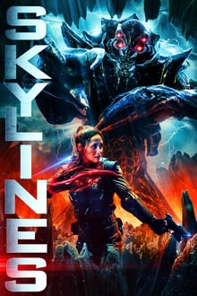

Harvey é promovido e precisa recrutar um formando da faculdade de harvad. Ele escolhe Mike Ross, mas há um problema:Mike não tem diploma.
Episódio
Harvey é promovido e precisa recrutar um formando da faculdade de harvad. Ele escolhe Mike Ross, mas há um problema:Mike não tem diploma.
Um caso supostamente simples se transforma em pesadelo quando Harvey é acusado de conduta inapropriada com uma mulher casada.
Jessica acreditava que a promoção do Harvey o colocanria sob seu controle mas ele faz decisões sem consultá-la logo na primeira crise.
Harvey defende uma pessoa ligada ao passado de Jessica e a relação entre eles é colocada á prova.
Mike entra numa enrascada quando um velho amigo reaparece e pede sua ajuda.
Harvey e Mike tentam salvar uma mulher injustamente acusada de um crime de colarinho branco.
Mike tem a oportunidade de testar suas habilidades diante de Kyle, oprotegido de Louis, em um jugamento simulado.
Mike precisa deter um Robin Hood moderno cujos atos ilícitos estão colocando em risco a empresa de um clinte.
Harvey está sempre um passo atrás de um advogado invicto porém desonesto, e precisa decidir se está disposto a sacrificar a ética para ganhar a causa.
A empatia de Mike por um executivo dispensado prejudica a relação da firma com o clinte e Harvey acaba tendo que protege Mike da raiva da Jessica.
O ex-mentor de Harvey pede sua ajuda quando seu escritório passa a ser investigado.
Harvey faz tudo para tirar um homem inocente da prisão, mas acaba batendo de frente com o novo promotor público.
Titulos semelhantes
 98% relevante
98% relevante
2021
Sedutor, golpista e mestre do disfarce. Na sombra do passado, ele não quer recuperar o tempo, só saber a verdade.
2020
Ela quer se casar por amor. Ele prometeu nunca subir ao altar.A paixão entre os dois está prestes a sair do controle.
2021
Fama e fortuna para uma, amor e familia para outra. Amigas de longa data, elas são muito diferentes e muito leais.
2019
Entre rivalidades e romances, elas tentam resistir a um sistema injusto.
 95% relevante
95% relevante
2019
Archie é audacioso, Veronica tem má reputação e Betty não deixa barato. Bem-vindo a uma nova era em Riverdale.
2021
Um garçom com medo de palco e uma universitária com problemas. Juntos, eles formam a dupla de dominadores perfeita.
2020
Uma professora de Direito dá aos alunos a chance de atuar em casos reais, e eles achaam envolvidos em um assassinato.
2019
A vingança não é uma coisa bonita. Mas quem disse que ela não cai muito bem com uma tiara de miss?
2020
Olá, tabalho dos sonhos! Adeus Chicago! Bonjour Paris! Só tem um porém: Ela não saber falar francês.Bom c'est la vie.
Sobre Suits
Drogas, conteúdo sexual, linguagem imprópria e violência